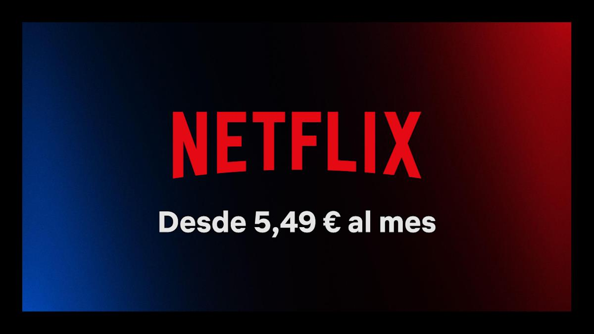
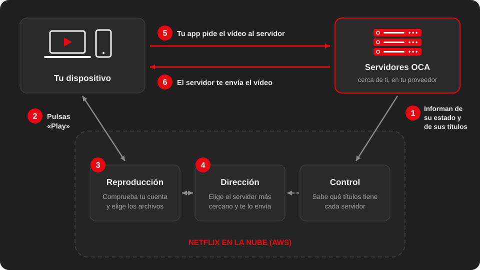

Primera tienda online de alquiler de DVD
Más de 900 títulos. Pides en la web y el disco llega por correo en 2–3 días.
- +900 títulos
- +400.000 reproductores de DVD vendidos
Por qué: era difícil encontrar cerca un sitio con variedad de DVD.
Proceso y evolución tecnológica
De un proceso físico, con discos y correo, a uno totalmente digital.
Antes · 1998
Después · desde 2007
De días a segundos: gana el streaming.

Siete hitos, de 1998 a 2022.
Los hitos 3, 4 y 6 son los que mejor explican cómo cambió el proceso de llevar una película al cliente.
Sigue bajando: el disco de abajo rueda por la historia.
Más de 900 títulos. Pides en la web y el disco llega por correo en 2–3 días.
Por qué: era difícil encontrar cerca un sitio con variedad de DVD.

Programa “Marquee”: cuota fija, sin fecha de devolución ni recargos por retraso.
Por qué: los clientes estaban hartos de las multas. Netflix ganó un ingreso fijo.

Películas al momento en el ordenador, sin esperar al DVD. Incluido en la suscripción.
Por qué: eliminar los días de espera del correo.
Fuente: Netflix: Netflix Offers Subscribers the Option of Instantly Watching Movies on Their PCs (2007)

Servidores de Netflix dentro de los proveedores de Internet: el vídeo sale de cerca del cliente.
Por qué: el streaming ya era gran parte del tráfico de Internet; una red propia salía más rentable.
Fuentes: Netflix: Announcing the Netflix Open Connect Network (2012) · Netflix: How Netflix Works With ISPs Around the Globe (2016) · Netflix: Open Connect, Celebrating a Decade (2022)

Lanzamiento simultáneo en 130 países nuevos durante el CES de Las Vegas.
Por qué: el streaming no necesita discos ni correo en cada país.
Fuente: Netflix: Netflix Is Now Available Around the World (2016)

Un botón para descargar en móvil o tablet y ver sin Internet, en todos los planes.
Por qué: seguir viendo series en aviones o donde Internet es caro.
Fuente: Netflix: Downloads Make It Even Easier to Watch Netflix on the Go (2016)

“Básico con anuncios” en 12 países. Llegó a España el 10/11/2022.
Por qué: un precio más bajo para atraer clientes y una nueva fuente de ingresos.
Fuentes: Netflix: Disfruta ahora de Netflix desde 5,49 € al mes (2022) · Carta a los accionistas 4.º trimestre 2024 · Carta a los accionistas 4.º trimestre 2025
Los servidores de Open Connect (OCA) guardan copias de las series y películas cerca de donde vive la gente, dentro de los proveedores de Internet. Esto es lo que pasa cuando le das a «Play»:

Fuentes: Netflix: Open Connect Overview · Netflix: Open Connect Appliances